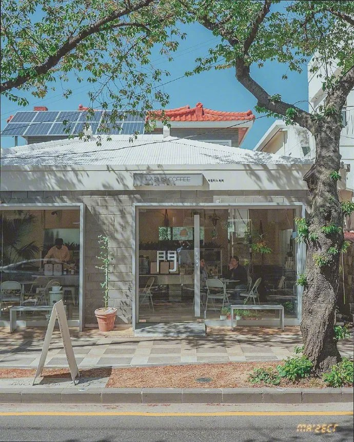

<!--css实现的轮播效果-->
<html>
  <body>
    <div class="container">
      <div class="wrap">
        
        
        
      </div>
    </div>
    <div>hello</div>
  </body>
</html>
<!--css实现的轮播效果 6秒，每张图2000ms，移动500ms -->
<style>
  .container{
    width: 500px;
    height: 300px;
    overflow: hidden;
    position: relative;
  }
  .wrap{
    position: absolute;
    left:0;
    top:0;
    animation: loop 6s linear infinite;
    width: 300%;
    transform: translate(0,0);
    overflow: hidden;
    font-size:0;
  }
  .item{
    width: 500px;
    height: 300px;
  }
  @keyframes loop {
    0% { transform: translate(0,0);}
    30% { transform: translate(0,0);}
    35% { transform: translate(-33.3%,0);}
    60% { transform: translate(-33.3%,0);}
    65% { transform: translate(-66.6%,0);}
    90% { transform: translate(-66.6%,0);}
    95% { transform: translate(0,0);}
    100% { transform: translate(0,0);}
  }
</style>